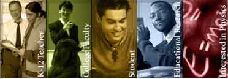

The OSP Digital Library Browser enables you to browse, organize and access collections of digital library resources such as EJS models and Tracker experiments. Collections and resources may be on a local drive or remote server.
The ComPADRE Pathway, a part of the National Science Digital Library, is a growing network of educational resource collections supporting teachers and students in Physics and Astronomy. As a user you may explore collections designed to meet your specific needs and help build the network by recommending resources, commenting on resources, and starting or joining discussions. For more information, see <http://www.compadre.org/OSP/>. To recommend an OSP resource for ComPADRE, visit the Suggest a Resource page at <http://www.compadre.org/osp/items/suggest.cfm>. Contact the OSP Collection editor, Wolfgang Christian, for additional information.